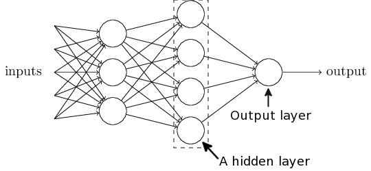

An introduction to neural networks and deep learning
A guest lecture for BMEN Mathematical Modeling
Tulane University
Alexej Gossmann
April 26, 2018
Quick remark before we get to the theoretical part of this presentation...
Live demos
This lecture contains several live demos. Why?
- DL is largely an empirical research field.
- Sometimes DL in actions seems like magic!
- DL is not my research field — I finally have an excuse to spend some time figuring out the common DL libraries!
Live demos
Main example:
Ultrasound nerve segmentation
- Task: Identify nerve structures in ultrasound images of the neck.
- Needed for effective and accurate insertion of a patient's pain management catheter.
Ultrasound nerve segmentation
Task: Predict the nerve mask for an input ultrasound image.
5635 training images, 5508 test images.
420×580 resolution.
~47% images don't have a mask.
Data from a $100,000 competition held in 2016: https://www.kaggle.com/c/ultrasound-nerve-segmentation
I will live-execute the following code (more on the hardware & software requirements later):
https://github.com/agisga/ultrasound-nerve-segmentation/blob/master/jupyter/U-net_improved.ipynb
The code borrows from: [1], [2].
Hopefully, by the end of this lecture you will understand all of the components of this deep learning model.
Artificial neural networks and deep learning
The theoretical part of this presentation (including most figures) is largely based on:
Michael A. Nielsen, "Neural Networks and Deep Learning", Determination Press, 2015 (licensed under a Creative Commons Attribution-NonCommercial 3.0 Unported License)
To follow in spirit, this presentation is licensed under a Creative Commons Attribution-NonCommercial 4.0 International License.

Perceptrons
- Developed in the 50s and 60s by Frank Rosenblatt.
- Inspired by earlier work by Warren McCulloch and Walter Pitts (cf., NAUTILUS. The Man Who Tried to Redeem the World with Logic.).
Weighing multiple input factors to make a decision according to a decision threshold.
Binary inputs $x_1, x_2, \ldots \in \{0, 1\}$,
and binary output.
Better notation
$$ \begin{eqnarray} \mathbf{x} \mapsto \left\{ \begin{array}{ll} 0 & \mbox{if } \mathbf{w}^T \mathbf{x} + b \leq 0 \\ 1 & \mbox{if } \mathbf{w}^T \mathbf{x} + b > 0 \end{array} \right. \end{eqnarray} $$
- Input vector $\mathbf{x} \in \{0, 1\}^p$,
- Vector of weights $\mathbf{w} \in \mathbb{R}^p$,
- A bias term $b \in \mathbb{R}$,
- An output in $\{0, 1\}$.
Example: NAND Gate.
$$ \begin{eqnarray} \mbox{output} & = & \left\{ \begin{array}{ll} 0 & \mbox{if } (-2x_1 - 2x_2 + 3) \leq 0 \\ 1 & \mbox{if } (-2x_1 - 2x_2 + 3) > 0 \end{array} \right. \end{eqnarray} $$That is, 00 $\mapsto$ 1, 01 $\mapsto$ 1, 10 $\mapsto$ 1, 11 $\mapsto$ 0.
(NAND gate is universal for computation. Analogy: a network of perceptrons and a computational circuit.)
A network of perceptrons
Hidden layer: Making a decision at a more abstract level by weighing up the results of the first layer.
The “Mark 1 perceptron” (Cornell, 1957)
Array of 400 photocells, connected to the “neurons”. The weights ($w_i$) and biases ($b$) are potentiometers.
In 1958 The New York Times reported the perceptron to be “the embryo of an electronic computer that [the Navy] expects will be able to walk, talk, see, write, reproduce itself and be conscious of its existence.” (Mikel Olazaran (1996) A Sociological Study of the Official History of the Perceptrons Controversy)

Use the sigmoid function as the activation function.
The sigmoid neuron: $$\mathbf{x} \mapsto \frac{1}{1 + \exp(-\mathbf{w}^T\mathbf{x} - b)}$$
Multilayer perceptron (MLP)
- Made up of sigmoid neurons, not perceptrons — a misnomer?
- Feedforward neural network — no loops allowed.
Universality theorem
Neural networks can be used to approximate any continuous function to any desired precision.
(among other sources, see Chapter 4 in Michael Nielsen's book, or George Cybenko (1989) Approximation by superpositions of a sigmoidal function).
MLP for recognition of handwritten digits
Let's see how well it works in a live demonstration!
Live demonstrations
State-of-the-art neural network models require a modern GPU (or GPUs).
In this talk I use the following setup on a Google Cloud virtual machine.
Instructions to reproduce the same exact setup can be found at https://github.com/agisga/coding_notes/blob/master/google_cloud.md.
Components:
-
NVIDIA Tesla P100 GPU rented on Google Cloud (about $1.19 per hour), and GPU drivers on linux
- CUDA and cuDNN libraries for numerical computing on the GPU.
- TensorFlow, with Keras as frontend.
- Python, SciPy, NumPy, Jupyter Notebook, ...
Classification of handwritten digits
I will execute the following code:
https://github.com/agisga/coding_notes/blob/master/Keras/MNIST_functional_API.ipynb
Stochastic gradient descent (SGD)
How do we find the optimal weights and biases?
Cost function: $$C = \frac{1}{2n} \sum\subscript{i=1}^n \lVert y(\mathbf{x}_i) - a(\mathbf{x}_i) \rVert_2^2,$$ where $a(\mathbf{x}_i)$ is the output of the NN and $y(\mathbf{x}_i)$ is the desired output for the input $\mathbf{x}_i$.
Gradient descent
- $ \begin{bmatrix} \mathbf{w} + \Delta \mathbf{w} \\ b + \Delta b \end{bmatrix} \leadsto C + \Delta C. $
- $\Delta C \approx \nabla C \cdot \begin{bmatrix} \Delta \mathbf{w} \\ \Delta b \end{bmatrix}$.
- We want: $\Delta C < 0$.
- Update: $ \begin{bmatrix} \mathbf{w} \\ b \end{bmatrix} \gets \begin{bmatrix} \mathbf{w} \\ b \end{bmatrix} - \eta \nabla C. $
- $\eta > 0$ is called the learning rate.
Stochastic gradient descent (SGD)
$C = \frac{1}{2n} \sum\subscript{i=1}^n \lVert y(\mathbf{x}_i) - a(\mathbf{x}_i) \rVert_2^2 = \frac{1}{n} \sum\subscript{i=1}^n C_i$,
where $C_i := (y(\mathbf{x}_i) - a(\mathbf{x}_i))^2 / 2$.
Randomly choose a subset $\mathbf{x}\subscript{i_1}, \ldots, \mathbf{x}\subscript{i_m}$ of size $m\ll n$.
Then, $\nabla C \approx \frac{1}{m} \sum\subscript{j=1}^m \nabla C\subscript{i_j}$,
The set $\{\mathbf{x}\subscript{i_1}, \ldots, \mathbf{x}\subscript{i_m}\}$ is called a mini-batch.
Stochastic gradient descent (SGD)
- Pick a mini-batch size $m \ll n$.
- Randomly (without replacement) choose a mini-batch $\mathbf{x}\subscript{i_1}, \ldots, \mathbf{x}\subscript{i_m}$.
- Update all weights and biases: $$ \begin{bmatrix} \mathbf{w} \\ b \end{bmatrix} \gets \begin{bmatrix} \mathbf{w} \\ b \end{bmatrix} - \frac{\eta}{m} \sum\subscript{j=1}^m \nabla C\subscript{i_j}. $$
- Repeat 2-3.
- An epoch is completed, when every input $\mathbf{x}_i$ has been used.
Stochastic gradient descent (SGD)
Now we only need to figure out how to differentiate $C\subscript{i_j}$ with respect to every weight and every bias in the neural network...
The backpropagation algorithm
- 1986 paper by Rumelhart, Hinton, and Williams.
- The “workhorse” of deep learning.
More better notation
- Layers $l = 1, 2, \ldots, L$.
- $\mathbf{a}^1 :=$ input layer (as a vector).
- $\mathbf{a}^l :=$ activations of layer $l$ (as a vector).
- $W^l :=$ matrix of weights at layer $l$.
- $\mathbf{b}^l :=$ vector of biases at layer $l$.
- $\mathbf{z}^l := W^l \mathbf{a}^{l-1} + \mathbf{b}^l$.
$$\Rightarrow \mathbf{a}^l = \sigma(W^l \mathbf{a}^{l-1} + \mathbf{b}^l) = \sigma(\mathbf{z}^l)$$
Chain rule!
Layer L (last layer): $$ \begin{eqnarray} \frac{\partial C}{\partial W\subscript{ij}^L} &=& \nabla\subscript{\mathbf{a}^L} C \cdot \frac{\partial \sigma(\mathbf{z}^L)}{\partial \mathbf{z}^L} \cdot \frac{\partial \mathbf{z}^L}{\partial W\subscript{ij}^L} \nonumber \\ &=:& \delta^L \cdot \frac{\partial \mathbf{z}^L}{\partial W\subscript{ij}^L} = \delta^L \cdot \mathbf{a}_j^{L-1} \nonumber \end{eqnarray} $$
Layer L-1: $$ \begin{eqnarray} \frac{\partial C}{\partial W\subscript{ij}^{L-1}} &=& \nabla\subscript{\mathbf{a}^L} C \cdot \frac{\partial \sigma(\mathbf{z}^L)}{\partial \mathbf{z}^L} \cdot \frac{\partial \mathbf{z}^L}{\partial \mathbf{z}^{L-1}} \cdot \frac{\partial \mathbf{z}^{L-1}}{\partial W\subscript{ij}^{L-1}} \nonumber \\ &=& \delta^L \cdot W^L \cdot \frac{\partial \sigma(\mathbf{z}^{L-1})}{\partial \mathbf{z}^{L-1}} \cdot \frac{\partial \mathbf{z}^{L-1}}{\partial W\subscript{ij}^{L-1}} \nonumber \\ &=:& \delta^{L-1} \cdot \frac{\partial \mathbf{z}^{L-1}}{\partial W\subscript{ij}^{L-1}} \nonumber = \delta^{L-1} \cdot \mathbf{a}_j^{L-2} \nonumber \end{eqnarray} $$
Likewise, any other layer $l$:
$\frac{\partial C}{\partial W\subscript{ij}^{l}} = \delta^{l} \cdot \mathbf{a}_j^{l-1}$,
where $\delta^{l}$ is determined by $\delta^{l+1}$, $W^{l+1}$, and $\partial \sigma(\mathbf{z}^{l}) / \partial \mathbf{z}^{l}$.
The backpropagation algorithm
Backpropagation — Aside:
Backpropagation — Aside:
Hinton (...) is now “deeply suspicious” of back-propagation (...). “My view is throw it all away and start again,” he said.(I may be wrong but I think this was said mostly in relationship to unsupervised learning)
(...)
“Max Planck said, ‘Science progresses one funeral at a time.’ The future depends on some graduate student who is deeply suspicious of everything I have said.”
Improving the way NN work
There are a lot of techniques, tricks, and best practices (some based on theory, some on empirical trial and error). Here is a small selection.
Least squares loss: Learning slowdown b/c $\nabla C$ depends on $\sigma^\prime(z)$ ($\approx 0$ for $|z| > 5$).
A better choice of cost fnct.
Categorical cross-entropy: $$ C = -\frac{1}{n} \sum_x [y \ln(a) + (1-y) \ln(1-a)]. $$
Regularization
Reduce over-fitting to the training data.
- L2: minimize $C + \frac{\lambda}{2n}\sum_w w^2$.
- L1: minimize $C + \frac{\lambda}{n}\sum_w |w|$.
- Dropout: Within every iteration of backprop, randomly and temporarily delete some neurons.
Variations of SGD
- Hessian technique
- Momentum-based GD
- Many more: An overview of gradient descent optimization algorithms (a blog post by Sebastian Ruder)
Activation functions
- Sigmoid: $\frac{1}{1 + \exp(-\mathbf{w}^T\mathbf{x} - b)}$
- Hyperbolic tan: $\mathrm{tanh}(\mathbf{w}^T\mathbf{x} + b)$
- Rectifier linear unit (ReLU): $\max(0, \mathbf{w}^T \mathbf{x} + b)$.
- Softmax. E.g., in MNIST last layer: $a_j^L = \frac{\exp(z_j^L)}{\sum_{k = 0}^9 \exp(z_k^L)}$ can be interpreted as "probability" that input image shows digit $j$.
Let's try these techniques on the handwritten digit recognition example.
Backpropagation — the vanishing gradient problem in deep NN
(unrelated to Hinton's remarks on a previous slide)
With standard initialization $|w_j|<1$, as so, $|w_j \sigma^\prime(z_j)| < 1/4$. $\Rightarrow$ Vanishing gradient in the earlier layers of a deep model $\Rightarrow$ The earlier layers "learn" much slower than later layers.
Likewise: exploding gradient when all $|w_j \sigma^\prime(z_j)| \gg 1$.
Deep Learning
Convolutional neural network
Deep convolutional network is the most widely used type of deep nearal network.
Modern CNN: LeCun, Bottou, Bengio, Haffner (1998).
Convolution
Each neuron in the hidden layer is connected to only $5 \times 5 = 25$ input activations (pixels).

- The 25 weights and the bias parameter are shared (i.e., the same for each hidden neuron). $\Rightarrow$ Drastic reduction in the number of parameters.
- Each neuron looks for the same "feature", just at a different location.
Convolutional layer
A complete convolutional layer uses several convolutional filters to produce several different feature maps.
Pooling layers
Most common: max-pooling
Other options: L2-pooling, average pooling.
Convolutional neural network
Putting it all together
Many types of convolutions
Vincent Dumoulin, Francesco Visin - A guide to convolution arithmetic for deep learning
 |
 |
 |
 |
|
 |
Animations source: https://github.com/vdumoulin/conv_arithmetic
Convolutional neural network
Let's try it on the handwritten digit recognition example.
Deep learning
Modular nature.
Many building blocks.
Segmentation DL architectures — U-net

Ronneberger, Fischer, Brox. 2015. "U-Net: Convolutional Networks for Biomedical Image Segmentation." Medical Image Computing and Computer-Assisted Intervention (MICCAI), Springer, LNCS, Vol.9351: 234--241.
Back to the ultrasound image segmentation example.